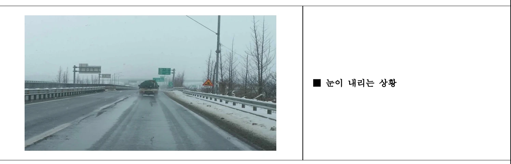

711. Hai cách lái xe nào là an toàn nhất trong tình huống sau?

- ①Vì đường vắng nên tăng tốc để đi nhanh.
- ②Đi trong tốc độ quy định tùy thuộc vào điều kiện thời tiết.
- ③Vì phía trước có thi công, nên cần lái xe chú ý đến tình hình giao thông.
- ④Vì mặt đường trơn trượt nên lái xe trên cả hai làn đường.
- ⑤Bám sát phía sau xe chở hàng đang chạy với tốc độ chậm ở phía trước.
Xem đáp án
Đáp án
② Đi trong tốc độ quy định tùy thuộc vào điều kiện thời tiết.
③ Vì phía trước có thi công, nên cần lái xe chú ý đến tình hình giao thông.
Căn cứ
Khi việc xây dựng đang được tiến hành phía trước, những tình huống bất ngờ có thể xảy ra, vì vậy hãy tiến hành đồng thời chú ý đến tình hình giao thông. Quy định giảm tốc độ được áp dụng tùy thuộc vào điều kiện thời tiết. Các trường hợp xe phải chạy với tốc độ giảm 20% so với tốc độ tối đa là khi mặt đường bị ướt do mưa hoặc khi tuyết tích tụ dưới 20 mm. Các trường hợp phải cho xe chạy với tốc độ giảm 50/100 tốc độ tối đa là khi tầm nhìn không quá 100 m do trời mưa to, tuyết rơi dày đặc, sương mù, mặt đường đóng băng hoặc tuyết dày từ 20 mm trở lên. Trường hợp này xảy ra (Điều 19, Khoản 2 Bộ luật Thi hành Luật Giao thông đường bộ).
Phần căn cứ là bản dịch máy để tham khảo.